How we built STILL
A photoreal Zen garden in Unreal Engine 5.9 where you wash forgotten things back to life. Built in four days by a team of AI agents, with the art and sound generated on fal and one human steering by playing it.
The current build, captured in-engine. Press play for sound.
Trailer · 1:08Wisps of light, a dirty garden, and Zen
It started as a design document, not code: "A living, photorealistic multiplayer Zen garden. Arrive as a wisp. Restore forgotten things. Grow something beautiful together." No combat, no pressure to chat, no punishing daily chores.
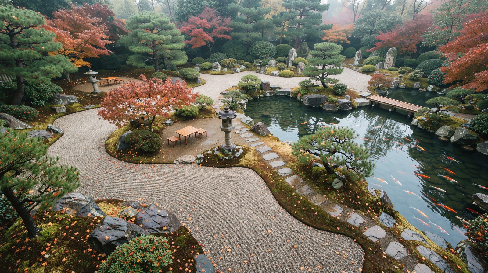
The target: an irregular garden of raked gravel, moss, maples and a koi pond, generated before a single line of game code existed.
The loop
Restore. Wash stones, rake gravel, clean forgotten objects.
Earn Zen. Cleaning earns personal Zen and adds to a shared, ever-growing garden total.
Create. Spend Zen on a tea table, a parasol, or a custom object described in words and generated on fal.
Collaborate. The twist: new objects arrive old and dirty, and everyone helps clean them.
Concepting with fal
Eight subjects, two takes each: 16 key-art images from flux-3 at 2K, 16:9. Every prompt lives in a YAML spec, and every prompt shares one style block, so key art, props and materials all look like the same place.
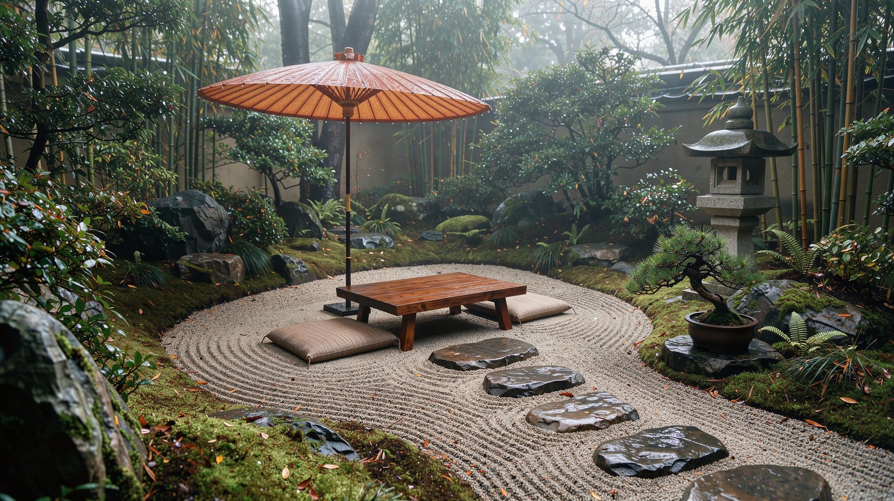
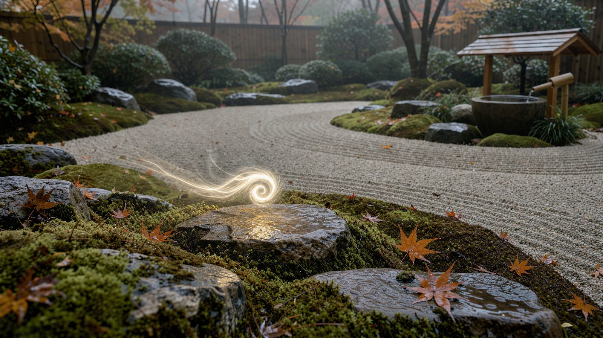
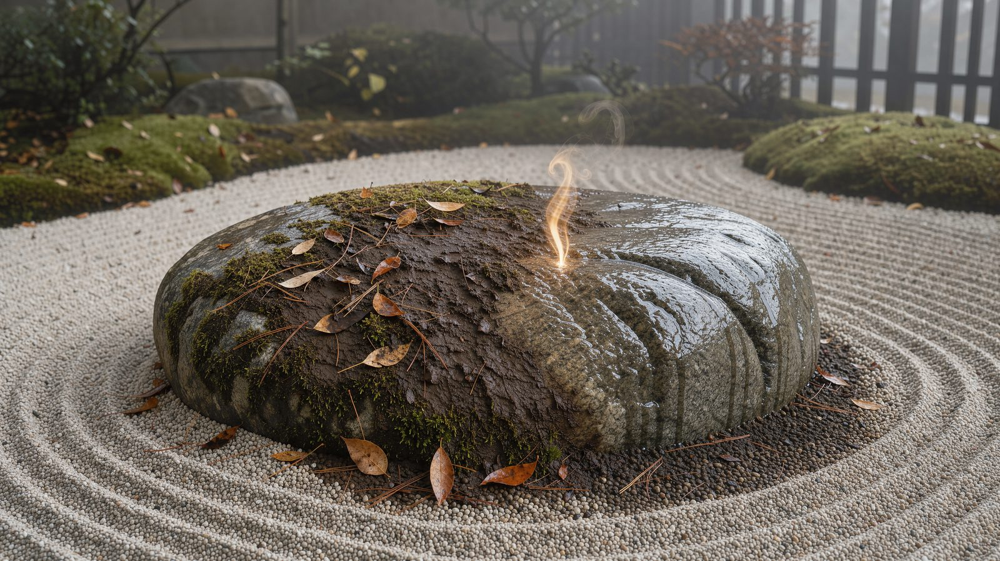
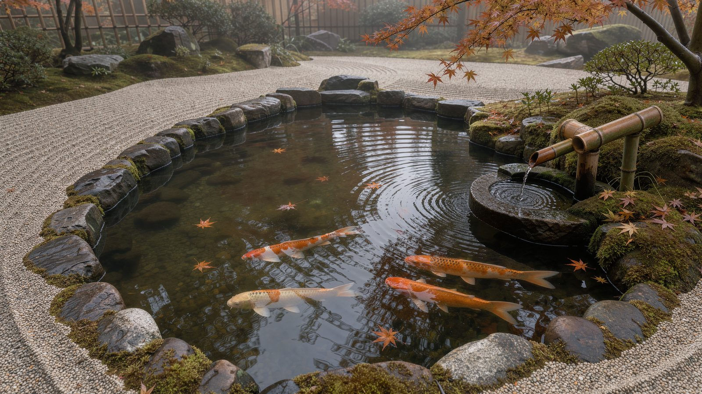
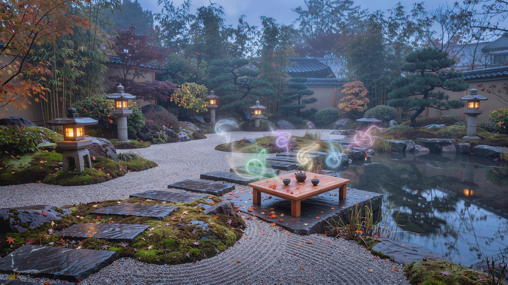
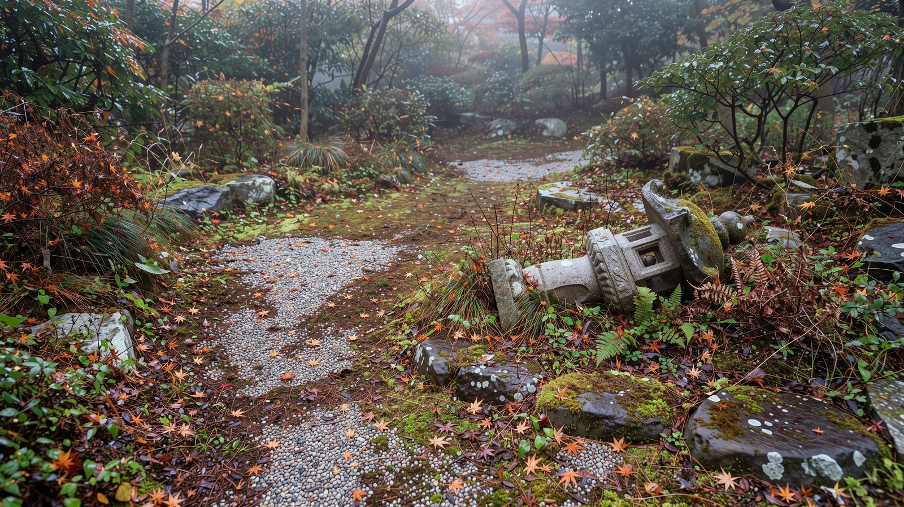
# pipeline/specs/style.yaml — reused verbatim by every prompt style_scene: Photorealistic photograph, traditional Japanese Zen garden, soft overcast early-morning light with gentle mist, shot on a full-frame camera with a 35mm lens, natural depth of field, muted earthy palette of moss green, wet granite grey, pale raked gravel, warm cedar and small burnt-orange accents, physically accurate materials, calm and quiet mood, no people, no text, no visible grid or tile pattern in the terrain.
Generating the world's assets
A Python pipeline turns prompts into game-ready assets: tileable materials, a 13-prop kit with clean and dirty versions of every prop, a sound library, and a service that lets players order new objects.
Tileable PBR materials
fal's patina material endpoint, 2048², tiling both ways: 7 base materials and 3 dirt overlays, five PBR maps each. Three were regenerated after a weak first take.
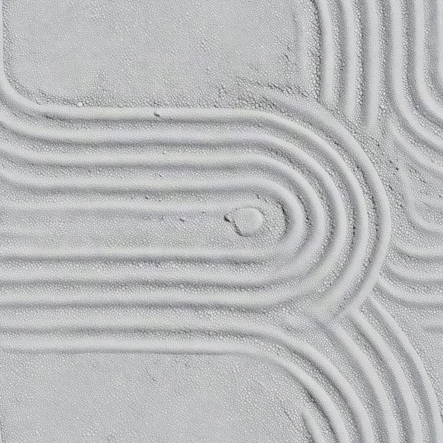
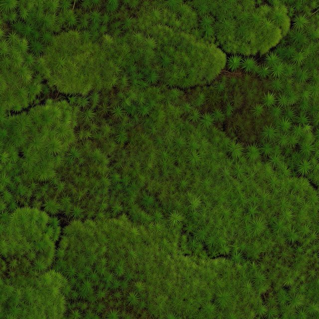
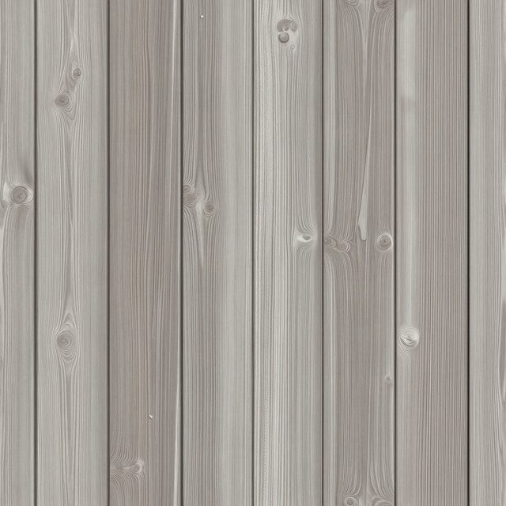
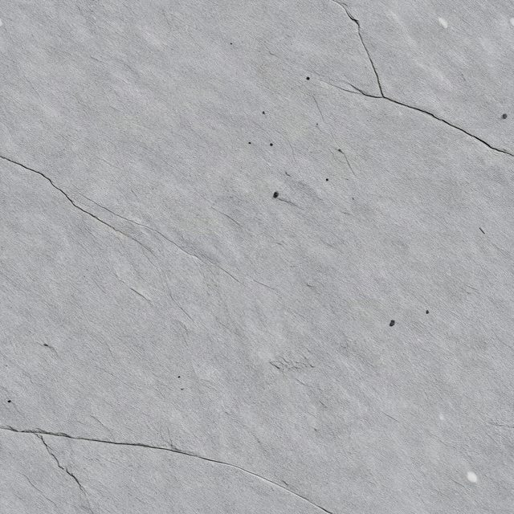
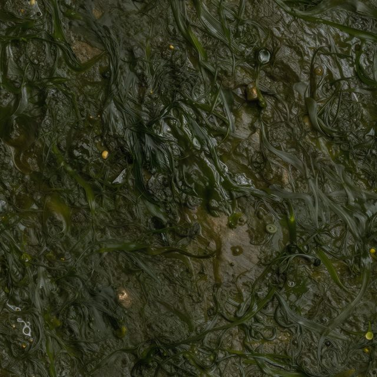
The prop pipeline: one prompt in, a clean and a dirty 3D prop out
Reference image
Studio product shot from the shared prop style.
Dirty reference
Same object, same angle; only the surface turns old and mossy.
Cut-out
Background removed for a clean image-to-3D input.
Image to 3D
Picked by a bake-off of three models on two props.
Blender, headless
Scale to metres, LODs, stats, hard budget check.
Dirty variant
Retextured maps on the same mesh and UVs, so the engine can blend clean ↔ dirty.
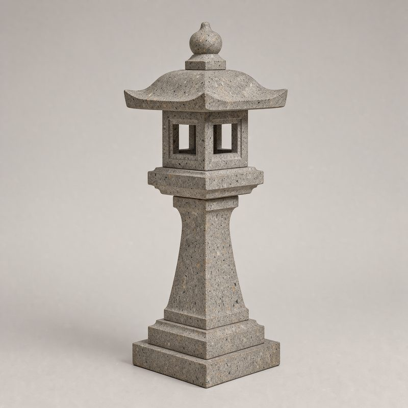
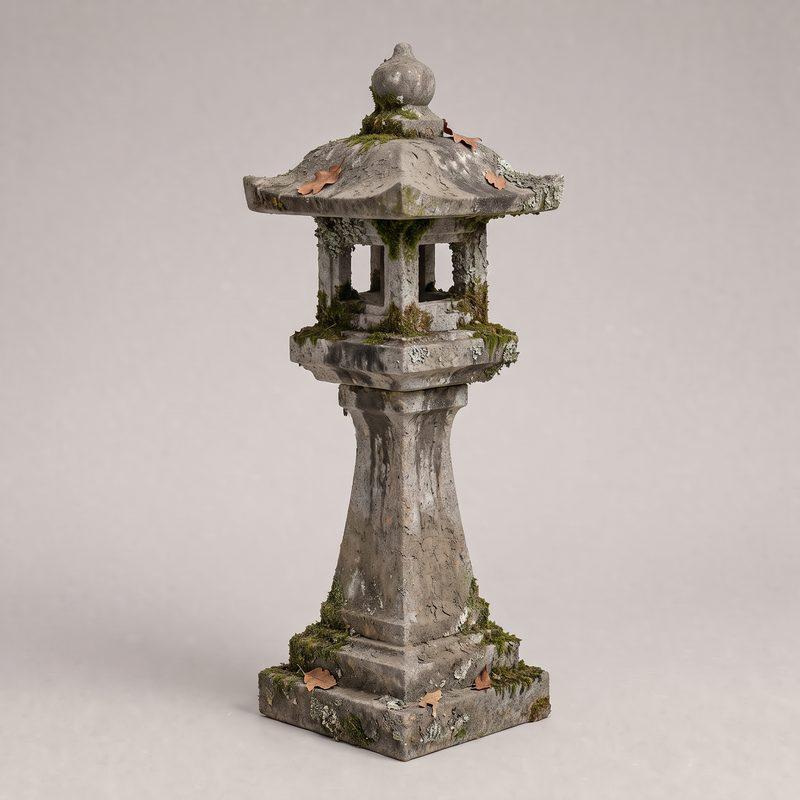
Hard budgets, enforced in code
13 of 13 props pass the budget, and all 13 have a dirty variant on the same mesh and UVs.
The first dirty approach compared UV hashes and failed on every prop, because the round trip changed a few triangles. It was replaced with a UV-overlap check that puts the retextured maps onto the clean LODs.
The generation service
FastAPI + SQLite. A player's request goes through moderation → atomic Zen debit → worker → approve, or fail and refund.
Live tests: a denied prompt (no charge), a curated request (100 Zen), and a custom wind chime through the full generative path (500 Zen, about 11 minutes).
An independent review found real issues (refunded files still downloadable, no admin auth, a worker thread that could die silently) and they were fixed in the same session. A static review site collected the whole kit.
A sound library, generated and measured
58 sounds: synthesised chimes, bowl and bell, plus fal-generated water-jet loops, splashes, raking, two garden ambiences and three music stems. ElevenLabs sound effects v3 and Music v2 won almost every pick; Stable Audio 2.5's jets came out as thin hiss. Everything is tuned to D major. The first pad prompt drifted off key on every model, and a "pedal tone D" prompt fixed it. Loops are crossfaded and seam-tested, loudness is normalised.
Bringing it into Unreal 5.9
A C++ project on Unreal 5.9.0 Preview 1: wisps, a server-validated cleaning grid per object, Zen, purchases through the generation service, hidden hex clearings, saves, and a listen server. A two-instance acceptance harness checked it from day one: 17/17 checks plus 3/3 against the real service.
The import is scripted too: 13 kit props and 10 environment props, and a Garden map built from scripts. The auto-unwrapped UVs had up to 2,885 islands, which scattered the cleaning mask, so the pipeline generates a smooth mask UV and moves the texture UVs to a second channel.
looks really good but I think it could look better.
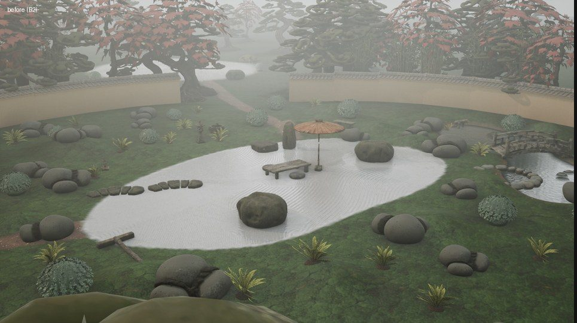
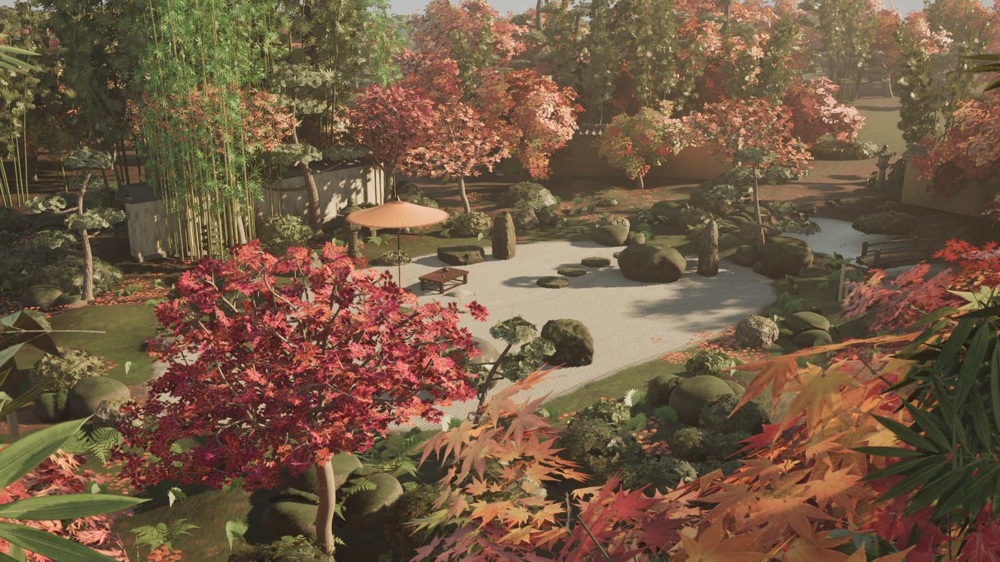
the sand was already raked ... Part of the cleaning of the Zen Garden is raking it.
messy like it needs to be done
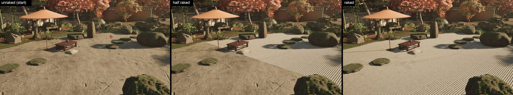
The difference between the two states is the reward.
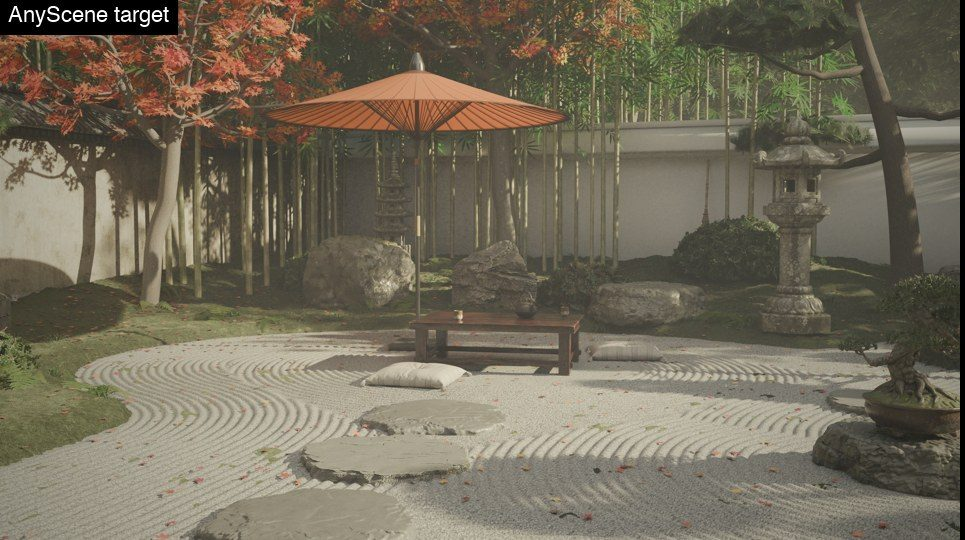
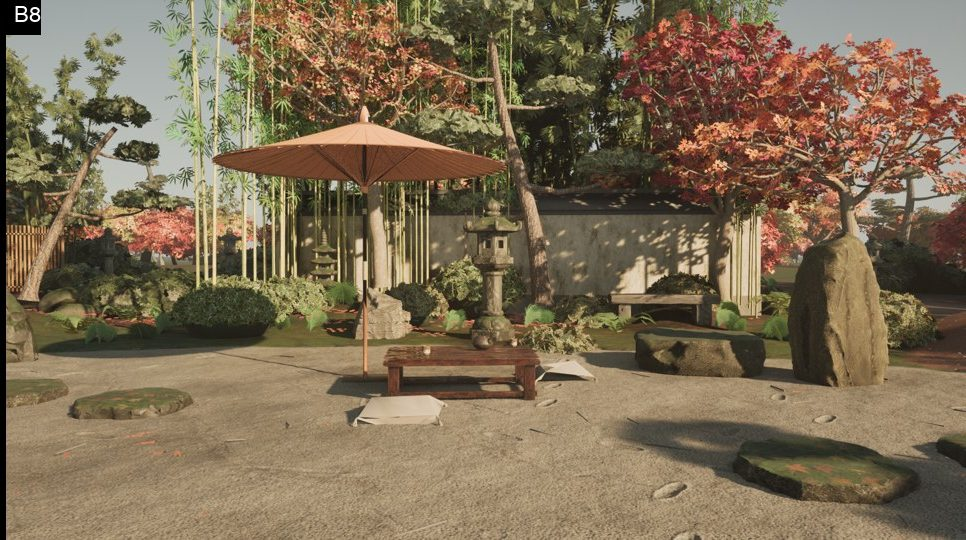
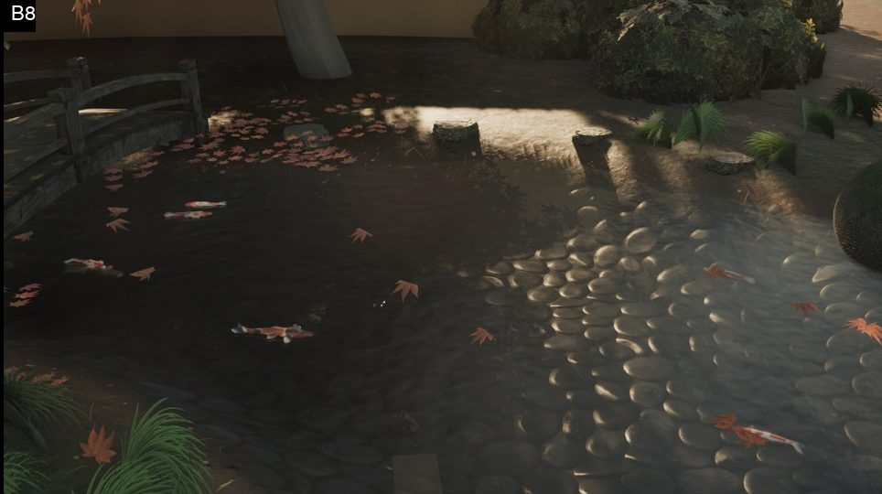
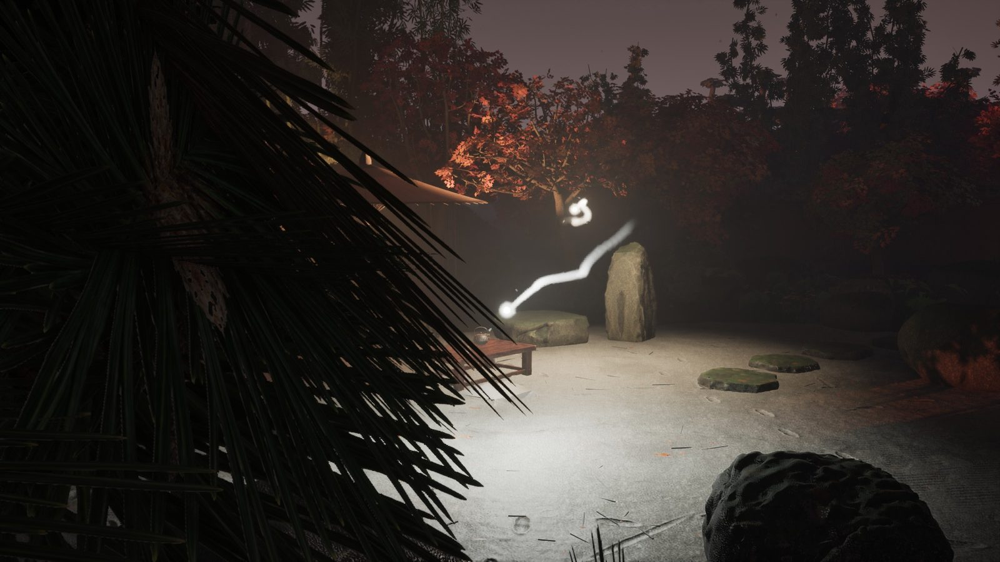
Making dirt feel real
Cleaning is the whole game, so it has to feel good. The owner's verdict on the good-looking build was blunt:
This looks good but it doesn't feel good
M1 · one lantern you can really wash
Instead of rolling changes out everywhere, the team made one hero lantern great first. A pressurised water jet cuts a crisp clean line through the grime. The lantern carries a 512 × 512 dirt mask mapped onto its real surface through an xatlas UV atlas. Jet strokes go to the server, which validates them; your own client predicts them instantly; every machine stamps them the same way. A second-opinion review caught that the first version could disagree between players. Chimes at 25, 50 and 75 %, a singing bowl and rising motes at the finish.
ok I like the vid but the dirty stuff does not really look dirty, maybe we can use decals with a mask as we clean to really make it look bad
M1b · real dirt, baked into the mask
fal generated six tileable dirt materials (wet mud, dried cracked mud, cushion moss, algae slime, lichen, black mould) and nine cut-out decals (bird droppings, mud splashes, wet leaves, moss clumps, drip streaks). Unreal decals can't be washed off texel by texel, so a script projects them onto the lantern itself, into the same map the jet erases: moss on the tops, droppings on the roof, drips under every ledge, mud on the bottom 35 cm. Thick crust takes two passes and breaks off in chunks; its pattern is computed in C++ and mirrored bit-exact in Python, so the painted crust sits exactly where the game expects it.
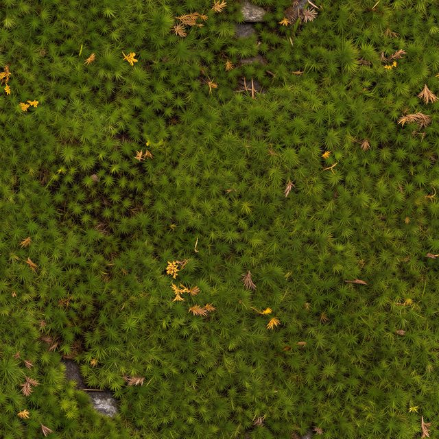
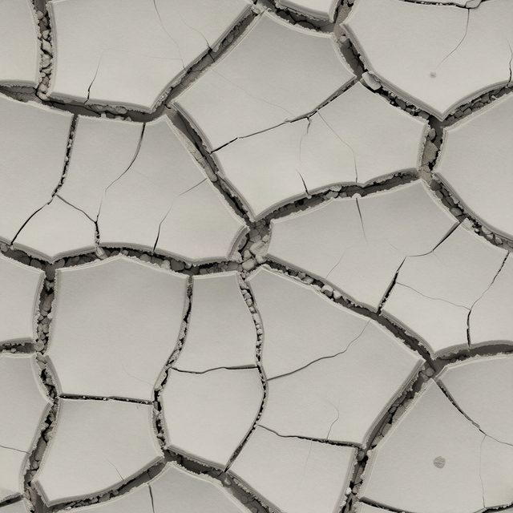
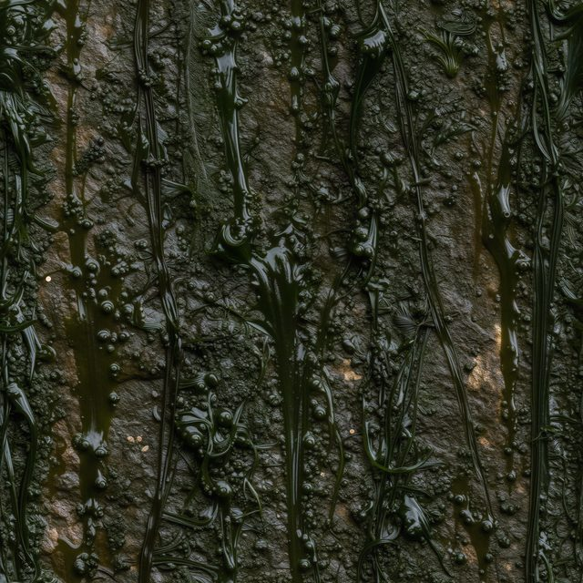
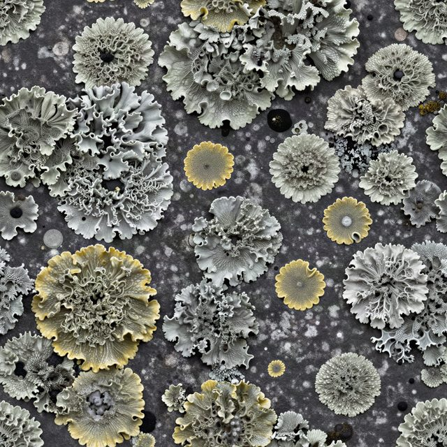
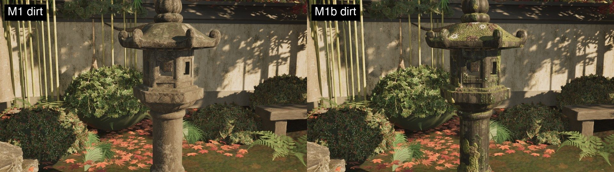
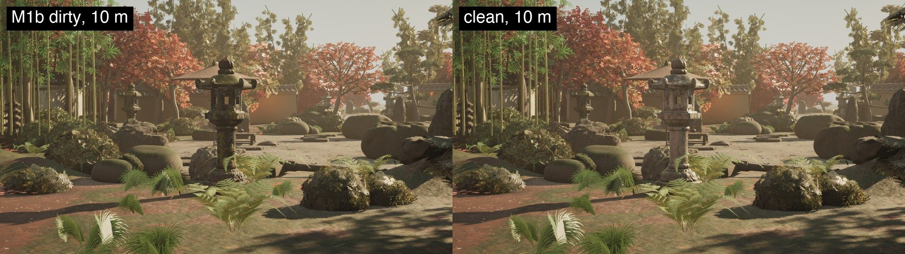
Washing the hero lantern
M1c clip · 0:40The polished version after an agent critique of the stills fixed six problems: blocky moss edges, glossy "lacquer" grime, droppings that looked like flowers, washed stone that looked like wood. Recorded in the earlier third-person camera.
M1d · nothing can block a finish
make sure stuff like rocks dont keep the player from cleaning durty spots and the not be able to finish
when it gets down to like 1% it just says done ... they scale that 99% to 100 so they dont have to find every little nook and crany
The server now works out, for every object, which surface a player can actually see and spray, with rocks, walls, bushes and neighbouring objects in the way. Unreachable surface stops counting. "Done" means 99 % of what is reachable, shown as 100 %, and the last specks are wiped. An automated check then washes every object from reachable spots through the normal server rules: all of them finish. By estimate, about two thirds could not reach the old finish line. No rock had to be moved.
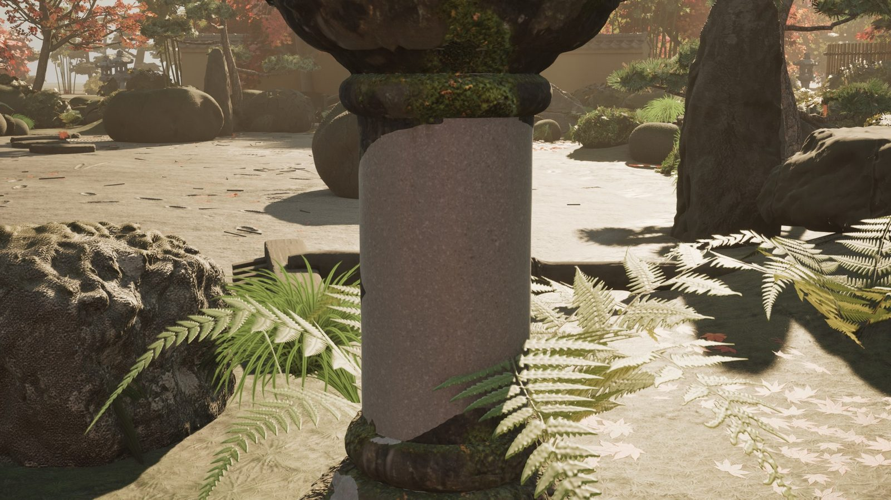
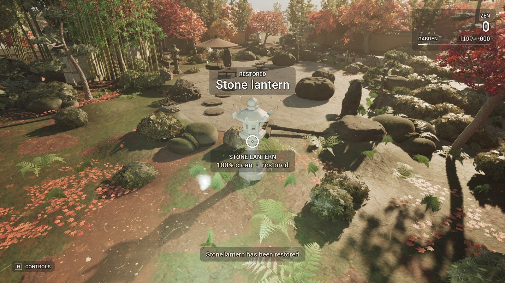
M2 · every object, its own dirt
At the owner's request the lantern's filth went darker. Then the jet rolled out to every cleanable: 24 object types get their own atlas and family-aware filth (stone, wood, cloth, paper, plant), with jet sounds per surface. Long sessions stay small because strokes are compacted into a base every so often, and old saves migrate. Measured cost: about 0.1–0.3 ms per frame, roughly 85 fps at 1080p native.
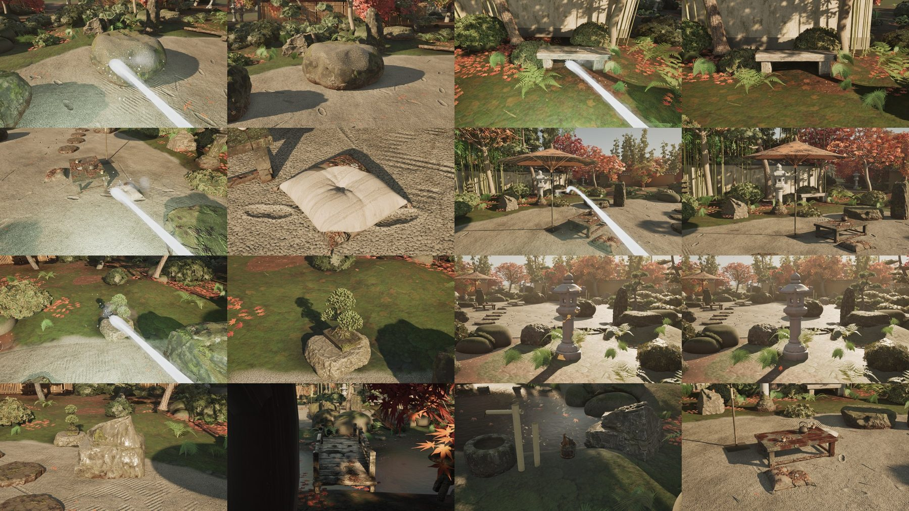
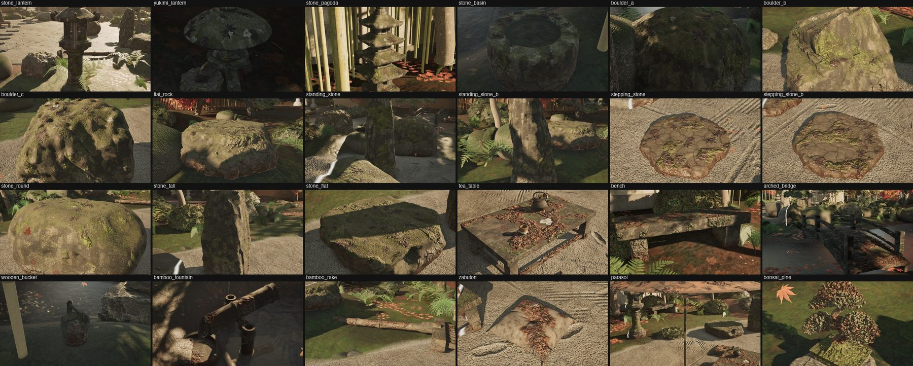
And a garden gnome
Oh make sure we add a garden gnome to the garden as well.
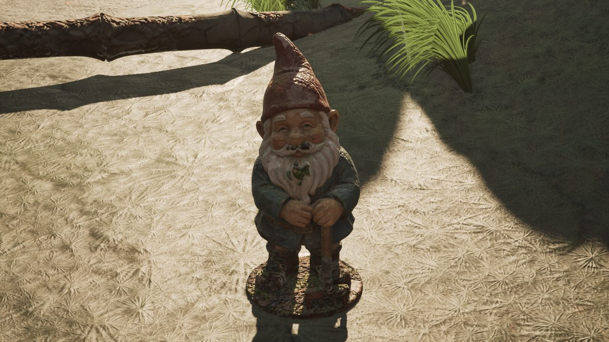
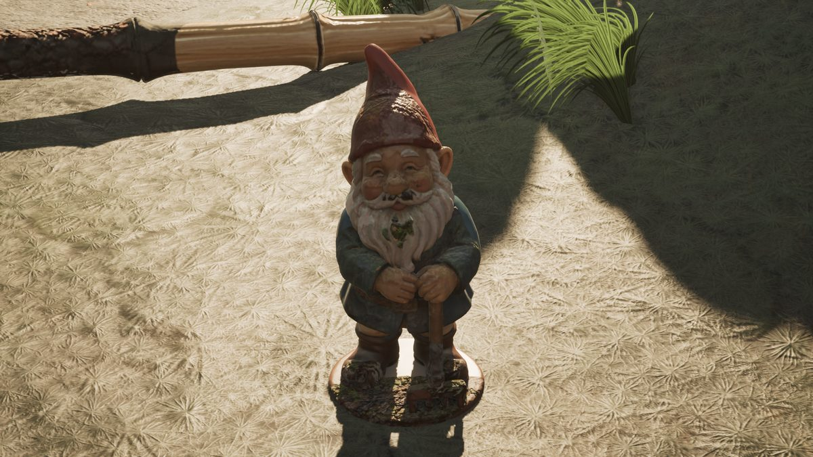
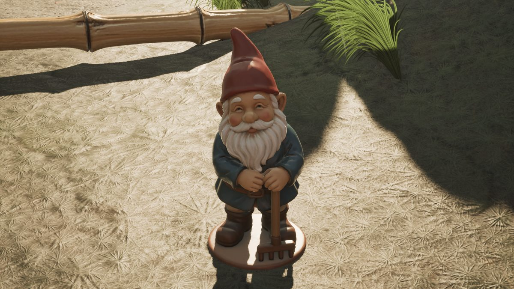
Controls, by playing
The spray button moved five times before it felt right. Each move came from the owner playing, often in a browser on a trackpad.
do what ever is closest to Power wash simulator
that works, lets close out
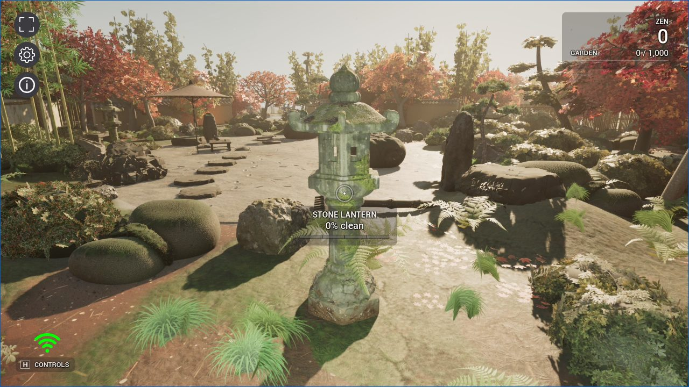
The game also runs in a browser through Unreal's Pixel Streaming, a real game instance streamed to the page.
Each change was checked by tests before it reached the owner: the same 240 px mouse movement sent as eight packets turned the camera only 5.04°; after the fix it turns 40.32°, the same as a single packet.
How the team worked
One person, Kenneth, played and reacted in plain words. AI agents did the planning, building, testing and reviewing.
An orchestrator and specialists
A main Claude session planned and integrated. Bounded jobs went to subagents: an Opus agent built the M2a dirt pipeline, another imported the gnome; Codex took on control repairs.
Reviews by fresh eyes
Independent reviewers found the service's security gaps, a jet mask that could disagree between players, and six problems in the M1b dirt stills, each fixed before moving on.
Evidence, not claims
An acceptance harness grew from 17 checks to 53. Every stage left before/after shots and clips. Test runs launch in the background so they never steal focus from the owner's game.
The human in the loop
The docs keep the owner's words verbatim and separate from the agents' own critique. A change counts as accepted only when Kenneth says so: the controls are confirmed, while most of the M1b–M2 dirt work is still marked "not reviewed" in the progress notes. The plan, progress file and dev blog carry the state, so any fresh session or agent can pick the work up cold.
Where we are, and what's next
A first-person Zen garden of 38 washable objects, each with its own generated dirt and sound, raked gravel, koi, and generated objects you can order with Zen.
A run through the current build
1:23Recorded in-engine: the hero lantern from the spawn view, the water basin, a rock, and the gnome.
Done
Generated world, full prop pipeline, generation service, Unreal C++ game, water-jet cleaning on every object, finishability for all 38, first-person controls the owner signed off, browser play.
Next
A broader review of cleaning and visual feel with Kenneth. Then: the jet on purchased objects and on raking, then music layers, garden milestones and a proper arrival moment for purchased objects, then clip tools and a performance pass. Decay and choosing your own clearing are not built yet.